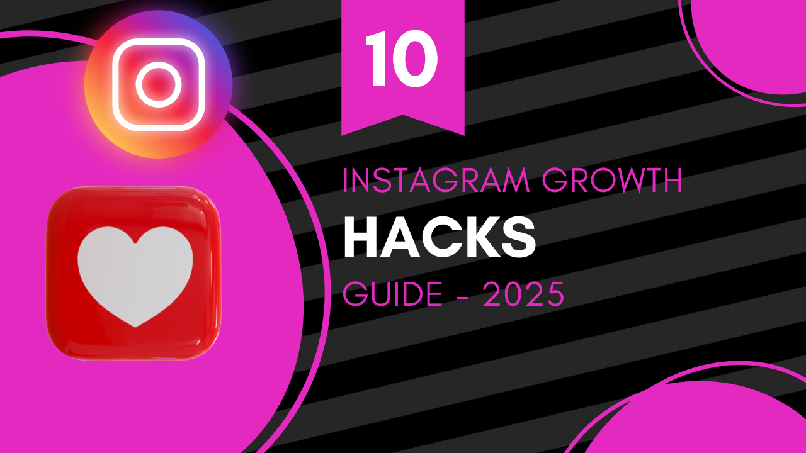

Top 10 Instagram Growth Hacks That Actually Work in 2025
Growing on Instagram in 2025 is tougher than ever — but it’s not impossible. With new algorithm updates, increased competition, and shifting trends, you need smart strategies that actually work. Here are the top 10 Instagram growth hacks that will help you gain followers, boost engagement, and maximize your reach this year.
1. Post Reels Consistently
Reels are Instagram’s most powerful growth tool. Posting 3–5 Reels per week can significantly increase reach and attract new followers.
2. Use SEO-Friendly Captions
Instagram is now a search engine. Add relevant keywords in your captions so users can discover your content through search results.
3. Optimize Your Profile
Use a clear profile picture, keyword-rich bio, and a call-to-action link. First impressions matter when people visit your page.
4. Engage With Your Audience
Reply to comments, DMs, and engage with followers’ content. Instagram rewards accounts that build real communities.
5. Collaborate With Other Creators
Use the Collab feature to share posts with another creator. This way, your content appears on both profiles, doubling exposure.
6. Leverage Stories Daily
Post Instagram Stories every day. Use polls, Q&As, and stickers to increase interaction and keep your profile active.
7. Post at the Right Time
Analyze your insights and share posts when your audience is most active. Timing can make or break engagement.
8. Mix Popular and Niche Hashtags
Use a mix of high-volume hashtags (#love, #instagood) and niche hashtags to reach the right audience without getting lost in the crowd.
9. Repurpose Content
Turn one piece of content into multiple formats: Reel, carousel, story, and post. This saves time and boosts visibility.
10. Track Analytics and Adjust
Use Instagram Insights to see what works best. Double down on top-performing content and drop what doesn’t engage.
Final Thoughts
These Instagram growth hacks in 2025 are practical, proven, and algorithm-friendly. Remember, consistency and engagement are the key drivers of growth. Start implementing these tips today, and you’ll see real results in your followers and engagement rates. Want to level up your profile? Try our Hashtag Counter Tool and optimize your strategy.